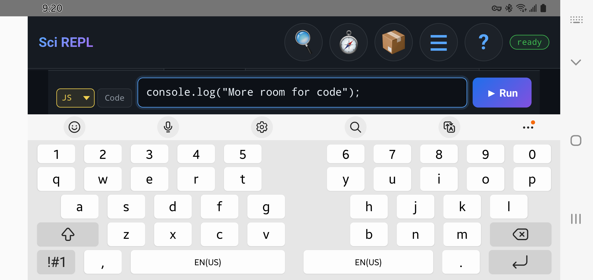
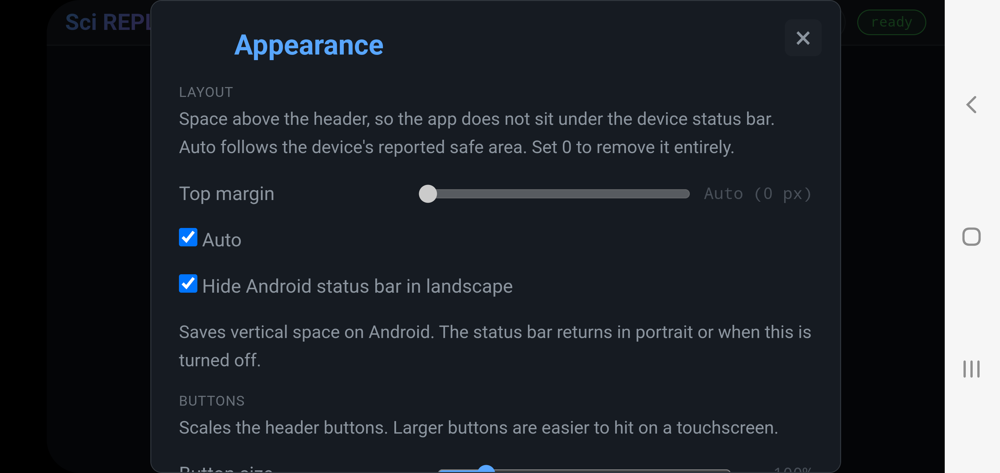
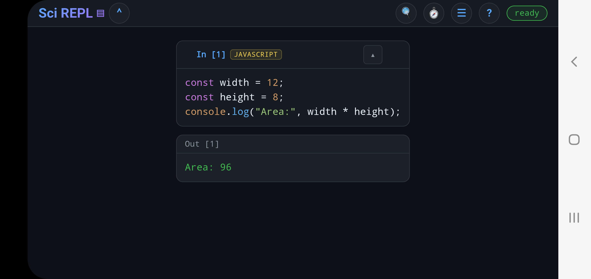
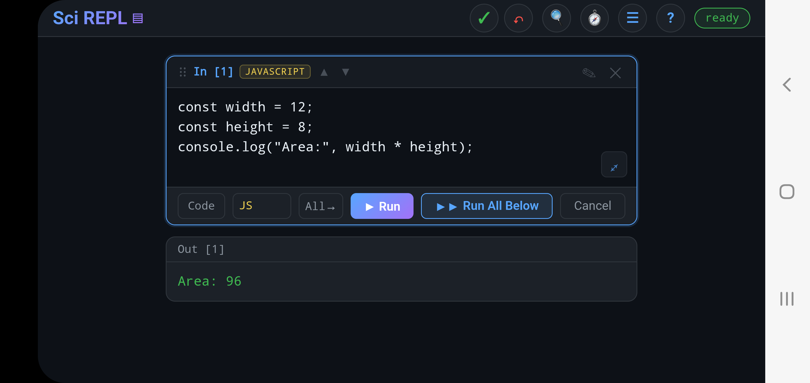
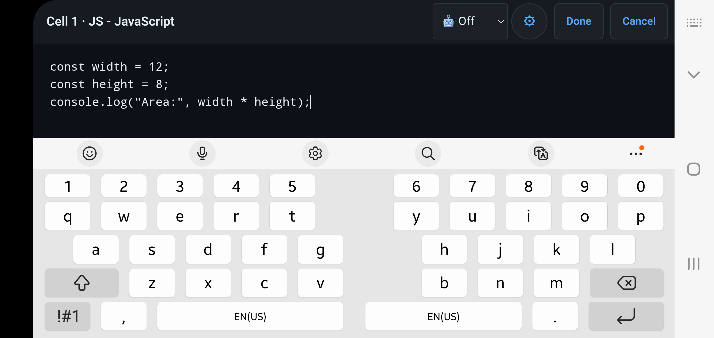

A little more room to work
Make room for code in landscape
A landscape phone is wide but short. The keyboard, Android's bars, and SciREPL's own controls all compete for the same vertical space. Start with the keyboard; Pro has a few extra ways to reclaim space inside the app.
The phone examples show Free 1.3.2 and a Pro 1.3.0 development build on Android 12. Your keyboard and control positions may differ.
Step 1 · Free + Pro
See where the space goes
Rotate the phone while a workbook is open. From top to bottom you may see the Android status bar, SciREPL's header and workbook controls, the workbook itself, the new-cell panel, the keyboard, and Android's bottom navigation or gesture area. These are different pieces: hiding the top status bar will not remove the bottom navigation bar.
Landscape is most useful when you can still see the code you are editing and some workbook output. If only a couple of lines remain, try the following steps one at a time. Return to portrait whenever you want the taller notebook view.
Step 2 · Free + Pro
Choose a compact keyboard

The on-screen keyboard often takes more height than all the app controls combined. In your keyboard's own settings, look for a shorter height or fewer rows for landscape. For example, if you already use Hacker's Keyboard, it has a four-row layout and adjustable height. A smaller layout makes code more visible, but can make keys harder to hit.
The interface reference lists other coding keyboards. Their layout options vary, so choose a size you can type on comfortably. Android's gesture navigation may save room compared with a three-button navigation bar, but that is a phone-wide Android setting, not a SciREPL switch.
Step 3 · Pro on Android
Hide the top Android status bar
- In SciREPL Pro, open Menu → Appearance.
- Turn on Hide Android status bar in landscape.
- Return to the workbook and rotate the phone. The top system bar disappears in landscape and returns in portrait or when you switch the option off.

This is the bar with time, battery, and notification icons. It does not hide Android's bottom navigation/gesture area or the SciREPL header. The switch appears in the installed Android Pro app, not in Free or the browser PWA. Free's Top margin setting changes app padding; it does not hide Android's status bar.
Step 4 · Pro
Fold controls you are not using
On a short landscape screen, tap ⌄ on the new-cell panel to fold it away when you are reading a saved cell. Tap ⌃ in the header to bring it back, or swipe up from the bottom edge of the app. It starts open. SciREPL hides the panel automatically while you edit an existing cell and restores its previous state when that edit ends.

If the workbook list is shown as a sidebar and you have more than one workbook, tap Sci REPL in the header to fold or restore that list. This saves width, which can be useful beside the keyboard, rather than much height. These controls appear only when their layout is applicable; you may not see a fold button on a taller tablet.
Step 5 · Pro
Edit a cell full screen
- Open a saved cell with its ✎ edit button, or double-tap its code.
- Tap the ⤢ expand icon in the corner of that cell's code editor. It is named Full screen for screen readers. The code gets the app's editing area, without the rest of the workbook crowding it.
- Use Done to apply the edited draft or Cancel to discard that saved-cell edit.

{kind=link}

{kind=link}
Full screen is a larger SciREPL editor; it is separate from the Android status-bar setting and does not hide system bars by itself. You can also open the new-cell draft in full screen, but leaving that editor keeps its draft in the new-cell panel; it does not create or run a cell.
Step 6 · Pro
Choose when editing aids take a row
Pro's extra keys and suggestion chips can help with brackets, navigation and completion, but a row of controls costs height. In released Pro 1.3.0, open Menu → Settings, then scroll to Accessory rows in landscape and select When there is room. Its Minimum visible code lines setting starts at eight; optional rows hide when the current keyboard leaves too little code space. Choose Off for the most room, or Always if you prefer those controls even on a short screen. The extra keys or chips must also be enabled in their own settings.
In newer development builds, these options moved to Menu → Completion → Landscape. The full-screen editor can show enabled rows even when the ordinary editor's landscape space rule hides them.